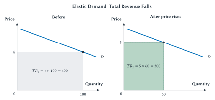
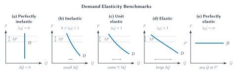
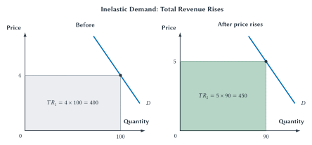
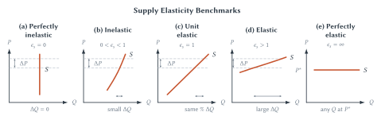
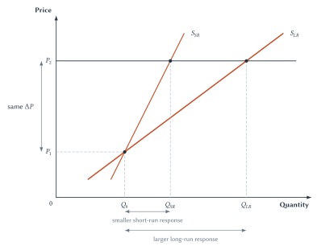

Chapter 5
Elasticity and Market Responsiveness
Elasticity measures how strongly buyers and sellers respond when prices, income, or other incentives change.

Suppose the price of gasoline rises from $3.00 to $4.00 per gallon. Chapter 3 tells us that drivers will buy less gasoline. Chapter 4 helps us trace how a change in market conditions can produce a new price and quantity. But neither chapter answers the question that matters most to a family planning its budget, a gas station forecasting sales, or a policymaker studying an energy tax:
How much will gasoline purchases fall?
Some drivers can combine trips or drive less within days. Others still need to get to work, school, and medical appointments. Over several years, households can buy more fuel-efficient cars, move closer to work, change jobs, or use different forms of transportation. The direction of the response is easy to predict. Its size is not.
This chapter introduces elasticity, the tool economists use to measure responsiveness. Elasticity is simply a ratio of two percentage changes. It turns a general statement such as “people respond to incentives” into a more exact question: how strongly do they respond?
That question matters far beyond gasoline. A restaurant considering a price increase needs to know how many customers it may lose. A city considering a tax needs to know how buyers and sellers can adjust. A farmer deciding whether to expand production needs to know how quickly output can change. In every case, direction is only the beginning. Size matters too.
From Direction To Size
Begin with four situations. In each one, price rises. The law of demand predicts that quantity demanded falls. Yet the likely size of the response is very different.
| Situation | Likely Adjustment | Why |
|---|---|---|
| Gasoline this week | Small | Driving plans and vehicles cannot change quickly. |
| Restaurant meals | Larger | People can cook at home, choose cheaper restaurants, or eat out less. |
| Emergency medical care | Small | Treatment may be urgent and difficult to postpone. |
| Streaming subscriptions | Larger | Other services are easy to find, and cancellation is simple. |
Table 5.1. The question elasticity answers. Price tells us the direction of the response. Elasticity helps us compare its size.
The table is not a list to memorize. Its rows all ask the same question: what can people do when the price changes? The more ways buyers have to switch, wait, reduce use, or choose something else, the larger their response can be.
Quick Concept
Elasticity Measures Responsiveness
Elasticity measures the percentage change in one variable compared with the percentage change in another.
Economists use percentage changes because raw changes can be misleading. A reduction of 10 units is enormous if a person originally bought 12, but tiny if a large business originally bought 10,000. Percentages measure the change compared with the starting amount. That makes it easier to compare different goods, markets, and time periods.
Price Elasticity Of Demand
The price elasticity of demand measures how responsive quantity demanded is to a change in the good’s own price. We write it as \(\epsilon_d\), using the Greek letter epsilon.
\[ \epsilon_d = \frac{\%\Delta Q_d}{\%\Delta P} \]
Read the equation in words: price elasticity of demand equals the percentage change in quantity demanded divided by the percentage change in price. The top of the ratio is the buyer’s response. The bottom is the price change that led to that response.
| Form | Meaning |
|---|---|
| Plain English | How responsive is quantity demanded to a change in the good’s price? |
| Equation | \(\epsilon_d = \frac{\%\Delta Q_d}{\%\Delta P}\) |
| Main idea | Elasticity is a ratio of two percentage changes. |
| Interpretation | A 1 percent price change is associated with an approximate \(\epsilon_d\) percent change in quantity demanded. |
Table 5.2. Price elasticity of demand. The equation is a shorter way to state the English definition.
Suppose a 10 percent increase in price causes quantity demanded to fall by 20 percent. The elasticity is \(-20\%/10\%=-2\). Buyers changed their purchases by twice the percentage change in price. Demand was quite responsive.
Now suppose the same 10 percent price increase causes quantity demanded to fall by only 2 percent. The elasticity is \(-2\%/10\%=-0.2\). Quantity still moved in the direction predicted by the law of demand, but the response was much smaller.
This chapter will usually supply the percentage changes. The main goal is not to spend pages calculating them. It is to understand what the ratio says about behavior.
Key Point
Elasticity Connects Incentives To Behavior
When demand or supply is more elastic, people adjust more strongly to the same change in price or cost.
Why Demand Elasticity Is Negative
The law of demand says that price and quantity demanded move in opposite directions. If price rises, the percentage change in price is positive while the percentage change in quantity demanded is negative. If price falls, the signs reverse. Either way, price elasticity of demand is normally negative.
Economists handle that minus sign in two common ways.
| Convention | Meaning | When It Helps |
|---|---|---|
| Signed elasticity | Keeps the minus sign because price and quantity demanded move in opposite directions. | Shows the direction of the relationship. |
| Absolute value, \(|\epsilon_d|\) | Reports the size of elasticity without the minus sign. | Makes elastic, unit elastic, and inelastic classifications easier to read. |
Table 5.3. Two ways to report demand elasticity. The signed value shows direction; the absolute value emphasizes the size of the response.
If \(\epsilon_d=-2\), then \(|\epsilon_d|=2\). Both statements describe the same demand response. In this chapter, calculations will keep the sign. When we classify demand, we will usually use the absolute value.
Quick Concept
Negative Sign Or Absolute Value?
Demand elasticity is usually negative because price and quantity demanded move in opposite directions. Principles courses often use the absolute value because the main question is whether the response is large or small.
If You Know Two, You Can Find The Third
The demand-elasticity equation connects three pieces of information:
- the percentage change in price
- the percentage change in quantity demanded
- price elasticity of demand
If any two are known, the third can be found. The arithmetic is useful because it shows exactly what an elasticity number means.
| Given | Setup | Result |
|---|---|---|
| Price rises 10 percent; quantity demanded falls 5 percent | \(\epsilon_d=-5\%/10\%\) | \(\epsilon_d=-0.5\) |
| \(\epsilon_d=-2\); price rises 4 percent | \(\%\Delta Q_d=-2\times4\%\) | Quantity demanded falls 8 percent. |
| \(\epsilon_d=-0.5\); quantity demanded falls 3 percent | \(\%\Delta P=-3\%/-0.5\) | Price rose 6 percent. |
Table 5.4. Three short elasticity calculations. Each row uses two known pieces to find the third.
The signs are worth noticing. In the third example, quantity demanded fell by 3 percent, so its change is \(-3\%\). Dividing by the negative elasticity gives a positive 6 percent price change. That fits the law of demand: price rose and quantity demanded fell.
Repeated practice is available in the Elasticity Practice applet. It uses the same two-of-three logic and gives immediate feedback without turning the chapter itself into an arithmetic worksheet.
Elastic, Unit Elastic, And Inelastic Demand
The absolute value of demand elasticity places the response into one of three main categories.
| Category | Absolute Value | What It Means |
|---|---|---|
| Elastic | \(|\epsilon_d|>1\) | Quantity demanded changes by a larger percentage than price. |
| Unit elastic | \(|\epsilon_d|=1\) | Quantity demanded and price change by the same percentage. |
| Inelastic | \(|\epsilon_d|<1\) | Quantity demanded changes by a smaller percentage than price. |
Table 5.5. Classifying demand responsiveness. The categories compare percentage changes, not the number of units bought.
The words can be misleading at first. Inelastic does not mean that buyers do not respond. It means they respond less than proportionally. Only perfectly inelastic demand has no quantity response at all.
Similarly, elastic demand does not mean quantity demanded is large. A market can have a small quantity and elastic demand, or a large quantity and inelastic demand. Elasticity describes how strongly quantity changes when price changes.
Study And Learn
Interpreting Elasticity
An absolute demand elasticity greater than 1 means quantity responds more than proportionally. An absolute elasticity less than 1 means quantity responds less than proportionally.
Why Demand Is More Elastic In Some Markets
Why might restaurant meals have more elastic demand than emergency medical care? Why might gasoline demand be more elastic over five years than over five days? The answer is not found in the formula alone. It depends on the choices buyers have.
| Factor | Demand Is More Elastic When | Demand Is Less Elastic When |
|---|---|---|
| Available substitutes | Many close alternatives exist. | Few close alternatives exist. |
| Necessity or urgency | The purchase can be reduced, delayed, or avoided. | The purchase is necessary or urgent. |
| Time | Buyers have time to change plans and find alternatives. | Buyers must respond immediately. |
| Budget share | The purchase takes a large share of spending. | The purchase takes a small share of spending. |
| Market definition | The good is defined narrowly. | The good is defined broadly. |
Table 5.6. What makes demand more or less elastic. Most of these factors change how easily buyers can adjust.
Substitutes
The availability of close substitutes is the clearest determinant. If the price of one brand of breakfast cereal rises, buyers can choose another brand. If the price of all food rises, avoiding the purchase is much harder. Demand for a narrowly defined brand is therefore likely to be more elastic than demand for food as a whole.
Substitutes do not have to be nearly identical products. Cooking at home can substitute for a restaurant meal. A video call can substitute for some airline trips. Moving closer to work can reduce the need for gasoline. What matters is whether buyers have another way to accomplish a similar purpose.
Necessity And Urgency
An urgent or necessary purchase is difficult to avoid. A patient needing emergency treatment cannot easily wait for a sale or switch to entertainment instead. Insulin for a person who depends on it has few immediate substitutes. Demand in such situations is likely to be inelastic.
But “necessity” is not a permanent label that settles every case. Demand for one particular pharmacy’s insulin may be more elastic if patients can safely buy the same medicine elsewhere. Demand may also become more responsive over time if treatment options, insurance coverage, or suppliers change. The reason is still the availability of workable alternatives.
Time
Time creates choices. When gasoline prices jump this morning, most commuters still own the same vehicle and live in the same place. They may reduce optional trips, but they cannot instantly redesign their lives. Over time, they can choose a more efficient car, carpool, use public transportation, move, or change where they work.
That is why long-run demand is often more elastic than short-run demand. More time does not force people to respond. It gives them more ways to do so.
Market Definition
The more narrowly a market is defined, the more substitutes it usually has. Demand for one coffee shop’s latte is likely to be more elastic than demand for coffee in town, and demand for coffee is likely to be more elastic than demand for beverages generally.
Market definition does not change people by itself. It changes which alternatives lie outside the market being measured. A narrow market leaves many possible substitutes just beyond its boundary.
Most of the determinant list can therefore be reduced to one broad idea: how easy it is to substitute one choice for another. Close alternatives, less urgent purchases, more time, and narrow market definitions all make it easier to switch or adjust. Economists sometimes call this substitutability. Budget share matters because it changes how worthwhile that effort is.
Key Point
Elasticity Is About Ways To Adjust
Demand is more elastic when buyers can switch, wait, reduce use, or choose another way to meet the same need. Budget share matters because it affects how strongly the price change is felt.
A Visual Map Of Demand Elasticity
Figure 5.1 puts the main demand categories side by side. In panels (a) through (d), imagine the same price change. The vertical gray arrow shows that common price change. The horizontal arrow shows how much quantity demanded responds.

Figure 5.1. Demand elasticity benchmarks. A common price change produces no quantity response under perfectly inelastic demand, a small response under inelastic demand, a proportional response under unit-elastic demand, and a large response under elastic demand. Perfectly elastic demand is an extreme case in which buyers will purchase at \(P^*\) but not above it.
Perfectly inelastic and perfectly elastic demand are extreme benchmarks. Most real demand lies between them. The middle panels are also schematic: they help us compare responses near the illustrated price change. They do not mean that a whole demand curve must have the same elasticity everywhere.
The figure may make it tempting to say that a steep curve is inelastic and a flat curve is elastic. That can be a useful first visual clue when scales are held fixed, but it is not the definition. Elasticity compares percentage changes. We will return to that distinction after seeing why it matters for revenue.
Demand Elasticity And Total Revenue
A business that raises price receives more money on every unit it continues to sell, but it also sells fewer units. Which effect is larger? Elasticity supplies the answer.
Total revenue is the amount buyers spend and sellers receive from sales:
\[ TR=P\times Q \]
On a demand graph, total revenue is the area of a rectangle. Its height is price and its width is quantity. A price increase makes the rectangle taller, but the resulting fall in quantity makes it narrower.
The next two figures begin at the same point: price is 4, quantity is 100, and total revenue is \(4\times100=400\) index units. In both cases, price rises to 5. Only the quantity response differs.
When Demand Is Inelastic
In Figure 5.2, quantity falls from 100 to 90. The price increase is proportionally larger than the quantity decrease. The taller price more than makes up for the slightly narrower quantity, so total revenue rises from 400 to 450.

Figure 5.2. A price increase raises total revenue when demand is inelastic. Quantity falls by a smaller percentage than price rises, so the new revenue rectangle is larger.
When Demand Is Elastic
Figure 5.3 uses the same initial point and the same price increase, but quantity falls much more, from 100 to 60. The loss of sales is proportionally larger than the gain in price. Total revenue falls from 400 to 300.
Figure 5.3. A price increase lowers total revenue when demand is elastic. Quantity falls by a larger percentage than price rises, so the new revenue rectangle is smaller.
The two figures explain why “raise the price to increase revenue” is not a general business rule. It works only when buyers do not reduce their purchases too strongly. If customers can easily switch away, the higher price may reduce revenue.
| Demand | If Price Rises | If Price Falls |
|---|---|---|
| Elastic | Total revenue falls. | Total revenue rises. |
| Unit elastic | Total revenue stays roughly unchanged. | Total revenue stays roughly unchanged. |
| Inelastic | Total revenue rises. | Total revenue falls. |
Table 5.7. The total-revenue test. The rule follows from the competing price and quantity effects shown in Figures 5.2 and 5.3.
Key Point
Elasticity And Total Revenue
When demand is inelastic, a price increase tends to raise total revenue. When demand is elastic, a price increase tends to lower total revenue.
Two cautions matter. First, this rule describes a price movement along an unchanged demand curve. If demand itself shifts, price and quantity may both move for other reasons, and the simple test does not identify the cause.
Second, revenue is not profit. Profit also depends on costs. Elasticity tells a seller what happens to sales revenue, not whether a decision is profitable after all costs are counted.
Common Mistake
Elasticity Is Not Slope
Slope measures changes in units, while elasticity compares percentage changes. That is why a curve’s appearance alone does not settle whether demand is elastic or inelastic.
Price elasticity of demand measures the response to a good’s own price. The same percentage-change idea can also measure how demand responds to income and to the prices of related goods. Keeping the three demand elasticities together makes their shared structure easier to see.
Income Elasticity Of Demand
Price is not the only condition that changes demand. Chapter 3 showed that income can shift a demand curve. Income elasticity of demand measures the size and direction of that shift.
\[ \epsilon_I = \frac{\%\Delta Q_d}{\%\Delta I} \]
Read the equation in words: income elasticity equals the percentage change in quantity demanded divided by the percentage change in income. Quantity demanded is the response; income is the driver.
| Income Elasticity | Classification | Meaning |
|---|---|---|
| \(\epsilon_I>0\) | Normal good | Quantity demanded rises when income rises. |
| \(\epsilon_I<0\) | Inferior good | Quantity demanded falls when income rises. |
| Larger positive value | More income responsive | Demand rises more strongly when income rises. |
Table 5.8. Interpreting income elasticity. Here the sign is important because it identifies whether demand moves with income or against it.
Restaurant meals, travel, and many forms of entertainment are normal goods for many households. As income rises, people tend to buy more. Bus rides, instant noodles, or some discount groceries may be inferior goods for some buyers: as income rises, they switch toward alternatives they prefer.
“Inferior” is an economic classification, not a judgment about quality. A good can also be inferior for one person or income range and normal for another. The answer depends on what buyers choose when their options change.
A normal good need not have a large income elasticity. Basic utilities or routine medical care may rise only modestly with income. Luxury travel may respond much more strongly. As before, elasticity adds size to a direction first introduced in the demand chapter.
Cross-Price Elasticity Of Demand
Chapter 3 also introduced substitutes and complements. Coffee and tea seem like substitutes; cars and gasoline seem like complements. But real relationships are not always obvious. Cross-price elasticity of demand measures how demand for one good responds to a change in the price of another.
\[ \epsilon_{xy} = \frac{\%\Delta Q_x}{\%\Delta P_y} \]
Read the subscripts in order. \(x\) is the good whose quantity demanded responds. \(y\) is the other good whose price changes.
| Cross-Price Elasticity | Relationship | Meaning |
|---|---|---|
| \(\epsilon_{xy}>0\) | Substitutes | When the price of \(y\) rises, demand for \(x\) rises. |
| \(\epsilon_{xy}<0\) | Complements | When the price of \(y\) rises, demand for \(x\) falls. |
| Near zero | Weakly related or unrelated | A change in the price of \(y\) has little effect on demand for \(x\). |
Table 5.9. Interpreting cross-price elasticity. The sign tells us whether the two goods tend to replace one another or be used together.
Suppose the price of tea rises and coffee purchases increase. Both percentage changes are positive, so the cross-price elasticity is positive. Buyers are using coffee as a substitute for tea.
Now suppose gasoline prices rise and purchases of large pickup trucks fall. The percentage change in truck purchases is negative while the gasoline price change is positive. The cross-price elasticity is negative, which is consistent with the goods being complements.
Tobacco And Marijuana: Logic Does Not Settle The Sign
When substitutes and complements were first introduced, it may have seemed that common sense could classify them. Sometimes it can. But consider tobacco and marijuana. Does a higher cigarette price lead some users to substitute marijuana? Or are the two goods often used together, so that reducing cigarette use also reduces marijuana use? The sign is not obvious in advance.
Studies have reached different conclusions in different settings. Research using data on U.S. adolescents in the early 1990s found a relationship consistent with complementarity. A separate late-1990s household-survey study also reported complementarity in its specifications.1 A 2023 study using hypothetical purchases by adult dual users in states with legal recreational cannabis found little relationship on average, along with substantial differences across individuals and some evidence of complementarity for a minority.2
These results are not necessarily contradictions. The populations, periods, laws, and methods differ. That is the teaching point. Cross-price elasticity turns a plausible story into a question that evidence can answer.
A negative cross-price elasticity is an economic description of complementarity. It can resemble one part of a “gateway drug” story, but it does not prove that using one drug causes a person to begin using another. A causal claim requires different evidence.
Quick Concept
Other Elasticities Use The Same Logic
Income elasticity and cross-price elasticity are still ratios of two percentage changes. What changes is the driver in the bottom of the ratio: income or the price of another good.
| Elasticity | Formula | Main Question | What The Sign Tells Us |
|---|---|---|---|
| Price elasticity of demand | \(\epsilon_d=\frac{\%\Delta Q_d}{\%\Delta P}\) | How does quantity demanded respond to the good’s own price? | Usually negative; absolute value classifies responsiveness. |
| Income elasticity | \(\epsilon_I=\frac{\%\Delta Q_d}{\%\Delta I}\) | How does demand respond to income? | Positive means normal; negative means inferior. |
| Cross-price elasticity | \(\epsilon_{xy}=\frac{\%\Delta Q_x}{\%\Delta P_y}\) | How does demand for \(x\) respond to the price of \(y\)? | Positive means substitutes; negative means complements. |
Table 5.10. Three demand elasticities, one basic structure. Each ratio compares a percentage response with a percentage change that may explain it.
Elasticity Is Measured In Real Markets
The examples so far have used clean numbers to teach interpretation. Real elasticities are estimated from evidence. Economists compare price changes with changes in purchases while trying to separate the price effect from income, tastes, season, product quality, and other influences.
Chapter 3 introduced this kind of work as econometrics: using data and statistical methods to measure economic relationships. An elasticity estimate is therefore not a permanent physical constant. It describes a market, population, period, price range, and research method.
| Market And Setting | Approximate Estimate | What The Estimate Suggests |
|---|---|---|
| Medical care under different insurance cost-sharing plans in a 1970s U.S. experiment | \(-0.20\) | Use fell when patients paid more out of pocket, but less than proportionally.3 |
| U.S. cigarette sales per person in a CDC evidence summary | \(-0.70\) | A 10 percent price increase is associated with about a 7 percent decline in sales per person.4 |
| Gasoline demand in a meta-analysis of studies published from 1990 through 2014 | \(-0.293\) short run; \(-0.773\) long run | Drivers adjust more when they have time to change vehicles, travel, location, and other choices.5 |
| Air-passenger demand using global data from 2010 through 2019 | \(-0.87\) globally; \(-1.27\) for trips originating in Europe | Responsiveness differed by region, route, and method and crossed the unit-elastic boundary in one estimate.6 |
Table 5.11. Selected estimates of demand elasticity. These numbers show the range of measured responses. They are examples to interpret, not constants to memorize.
The medical-care estimate is not an elasticity for every treatment or every patient. Emergency care, routine visits, medications, and optional procedures can have different responses. Insurance also changes the price patients face directly.
The cigarette estimate describes sales per person, not the response of every smoker. Addiction may limit some responses, while younger consumers, occasional smokers, or people with access to alternatives may respond differently.
Gasoline brings us back to the chapter opening. The short-run estimate is inelastic, but the longer-run response is more than twice as large. The law of demand did not change. The number of available choices did.
The air-travel estimates show why market definition and setting matter. A leisure traveler may postpone a trip or drive. A business traveler may have fewer options. A short route may compete with rail or cars, while an ocean crossing does not. Researchers must decide exactly which travelers and alternatives belong in the market they are studying.
Common Mistake
Do Not Memorize Without The Reason
Elasticity estimates differ because markets and choices differ. Ask what substitutes, time, urgency, budget effects, and measurement choices produced the estimate.
Price Elasticity Of Supply
Buyers are only one side of a market. Sellers also differ in how strongly they can respond to price. A restaurant with empty tables may serve more meals tonight. A farmer cannot instantly grow another harvest. A city cannot add thousands of apartments next week.
The price elasticity of supply measures how responsive quantity supplied is to a change in the good’s price. We write it as \(\epsilon_s\).
\[ \epsilon_s = \frac{\%\Delta Q_s}{\%\Delta P} \]
Read the equation in words: price elasticity of supply equals the percentage change in quantity supplied divided by the percentage change in price. Quantity supplied is the response, and price is the driver.
| Form | Meaning |
|---|---|
| Plain English | How responsive is quantity supplied to a change in the good’s price? |
| Equation | \(\epsilon_s = \frac{\%\Delta Q_s}{\%\Delta P}\) |
| Main idea | Supply elasticity is also a ratio of two percentage changes. |
| Sign | It is normally positive because price and quantity supplied move in the same direction. |
Table 5.12. Price elasticity of supply. The formula parallels demand elasticity, but it measures seller response.
If a 10 percent increase in price causes quantity supplied to rise by 4 percent, then \(\epsilon_s=4\%/10\%=0.4\). Supply is inelastic. If quantity supplied rises by 20 percent instead, then \(\epsilon_s=2\), and supply is elastic.
The classification is the same as for demand: greater than 1 is elastic, equal to 1 is unit elastic, and less than 1 is inelastic. Supply elasticity is normally positive, so there is no need to drop a minus sign when classifying it.
What Makes Supply Responsive?
Demand elasticity asks how easily buyers can adjust. Supply elasticity asks how easily sellers can change output.
| Factor | Supply Is More Elastic When | Supply Is Less Elastic When |
|---|---|---|
| Time | Sellers can change capacity, inputs, and production plans. | Sellers must respond immediately. |
| Available capacity | Existing workers, equipment, or facilities can produce more. | Firms are already near capacity. |
| Input flexibility | Labor, materials, and equipment can be obtained or redirected easily. | Inputs are specialized, scarce, or slow to obtain. |
| Entry and exit | Firms can enter, expand, contract, or leave relatively easily. | Entry and expansion are slow, costly, or restricted. |
Table 5.13. What makes supply more or less elastic. Each factor changes how easily sellers can alter production.
Time is central. In the short run, at least some production choices are fixed. A hotel cannot build another floor for tonight. A farmer cannot change acreage after the crop is planted. A factory near full capacity may need new equipment before it can expand much.
Available capacity explains why some short-run supply can still be responsive. A restaurant with an unused dining room may add a shift quickly. A hotel with empty rooms can serve more guests without constructing a new building. Spare capacity does not conflict with the importance of time. It is one reason a seller may already have a way to adjust before making a long-run investment.
Input flexibility matters for the same reason. A bakery can expand output more easily if flour, labor, and oven time are readily available. A product requiring a rare mineral, a specially trained worker, or a long biological growing cycle is harder to expand.
Entry and exit become especially important over longer periods. A high price can attract new sellers, new construction, and new methods. A low price can cause firms to contract or leave. Rules, permits, geography, and access to inputs can speed or slow those changes.
Key Point
Supply Elasticity Depends On Time To Adjust
Supply is usually less elastic when sellers cannot quickly change capacity, inputs, or production plans. It becomes more elastic when they have time and practical ways to expand, contract, enter, or leave.
Supply Elasticity Benchmarks
Figure 5.4 uses the same five-category map as the demand figure. The main difference is direction: supply curves normally slope upward because a higher price increases quantity supplied.

Figure 5.4. Supply elasticity benchmarks. A common price change produces responses ranging from no change in quantity supplied to a very large change.
Vertical supply is more than a classroom curiosity. Tickets for tonight’s sold-out concert, seats in a stadium, and harvested crops before the next growing season may have nearly fixed quantities. The price can rise sharply without creating more units in time.
Some supply remains highly inelastic even over long periods. The total amount of land in Manhattan cannot expand when its price rises. Improvements can change how intensively land is used, but the physical quantity in that location remains fixed.
Perfectly elastic supply is the other extreme. Sellers would provide units at a given price but not below it. Like perfectly elastic demand, it is mainly a benchmark that helps define the range of possible responses.
Short Run And Long Run
Figure 5.5 holds the price increase fixed and compares two supply responses. The short-run supply curve \(S_{SR}\) produces the smaller quantity change. The long-run curve \(S_{LR}\) produces the larger change.

Figure 5.5. Supply often becomes more elastic with time. Sellers make a smaller quantity response with existing short-run limits and a larger response after capacity, inputs, and entry can change.
Housing makes the distinction easy to see. When demand for apartments rises in a city, the number of existing units cannot change much immediately. Rents may rise with little increase in quantity. Over time, builders can add units, convert buildings, or enter the market. Yet even the long-run response differs across places. Geography can leave little buildable land, and regulation can limit height, density, or permits.7
More calendar time therefore does not guarantee elastic supply. Time matters because it can open new choices. If geography, law, biology, or specialized inputs keep those choices closed, supply may remain inelastic.
Oil Prices And Adjustment Over Time
We can now assemble the pieces using the market that opened the chapter. A sharp rise in the price of oil raises gasoline prices and creates possible responses on both sides of the market.
In the short run, drivers still have their current vehicles, homes, jobs, and schedules. Gasoline demand is likely to be inelastic. Some trips disappear, but quantity demanded changes by a smaller percentage than price.
Over time, buyers have more choices. They can purchase more efficient cars, change commuting patterns, move, use public transportation, or reorganize shipping. Long-run demand becomes more elastic because substitution becomes easier.
Oil producers also face short-run limits. Existing wells, pipelines, workers, and refining capacity cannot be expanded instantly. Some producers may have spare capacity, but others do not. Short-run supply may therefore be inelastic.
Over longer periods, firms can explore, drill, invest, enter, exit, and develop different energy sources. Supply can become more elastic. But geology, law, political risk, and the time required for major projects may continue to limit the response.
This is why the full effect of a price shock unfolds over time. The first response may be a large price change and small quantity change. Later responses can involve technology, location, investment, and entry. Elasticity gives us a compact language for all of those adjustments.
Why Elasticity Matters For Later Policy
Elasticity will return throughout the book because policies change incentives and people respond by different amounts.
| Later Topic | Why Responsiveness Matters |
|---|---|
| Taxes | The less responsive side of the market tends to bear more of the burden. |
| Deadweight loss | Larger behavioral responses usually mean more trades are discouraged. |
| Price controls | Elasticity affects the size of the resulting shortages or surpluses. |
| International trade | It affects how strongly buyers and sellers respond to world prices. |
| Market power | Firms care about demand elasticity when choosing price and predicting revenue. |
Table 5.14. Elasticity is a bridge to later chapters. The chapter provides the responsiveness logic; later chapters develop each policy result fully.
Do not try to learn those later results from this table alone. The important lesson now is more basic. A price change, tax, rule, or market shock does not have one fixed effect. Its effect depends on what buyers and sellers can do in response.
That is also why elasticity is not merely a calculation topic. It is a way to organize economic reasoning. Ask what changed, who can respond, how they can respond, and how much time they have. Then use evidence to estimate the size of the response.
Chapter Study Map
Core Ideas
- Elasticity measures responsiveness as a ratio of two percentage changes.
- Demand elasticity adds size to the law of demand. It does not change the direction of the response.
- Signed demand elasticity is normally negative; absolute value is usually used to classify elastic, unit-elastic, and inelastic demand.
- Substitutes, urgency, time, budget share, and market definition explain why demand responsiveness differs.
- Total revenue rises after a price increase when demand is inelastic and falls when demand is elastic.
- Supply elasticity depends on how easily sellers can change capacity, inputs, production, entry, and exit.
- Income and cross-price elasticity use the same ratio structure but answer different questions.
Diagrams And Tables
- In Figure 5.1, explain how the same price change produces different quantity responses across the five demand benchmarks.
- In Figures 5.2 and 5.3, compare the price effect with the quantity effect and explain the change in total revenue.
- In Figure 5.4, interpret the five supply benchmarks without relying only on visual steepness.
- In Figure 5.5, explain why the same price increase produces a larger long-run supply response.
- Use Tables 5.5, 5.7, 5.8, and 5.9 to classify demand, revenue effects, normal and inferior goods, substitutes, and complements.
A Complete Elasticity Explanation
A strong explanation does more than name an elasticity category. It should:
- identify the variable that changed
- identify whose behavior responds
- compare the percentage response with the percentage change that caused it
- explain which substitutes, limits, or time horizon make the response large or small
- state any conclusion about revenue or classification in words
Common Mistakes
- Treating elasticity as a unit change rather than a ratio of percentage changes.
- Saying inelastic demand means no response. Only perfectly inelastic demand has no quantity response.
- Classifying demand from a curve’s appearance without considering percentages and scale.
- Forgetting that the total-revenue rule applies to movement along an unchanged demand curve.
- Treating revenue as profit.
- Dropping the sign of income or cross-price elasticity even though the sign provides the classification.
- Assuming more time always creates elastic supply despite geography, biology, law, or other continuing limits.
- Treating one real-world estimate as a permanent value for every place, person, and period.
Practice And Enrichment
Use Elasticity Practice after learning the basic demand formula and again after supply, income, and cross-price elasticity. Practice until you can solve each two-of-three form, classify the result, and explain its meaning in a sentence.
The real-world estimates and tobacco-marijuana case are applications. They show how elasticity is measured and why evidence matters, but the central skill is still explaining how much buyers or sellers can adjust and why.
Review Questions
- What does elasticity measure?
- Why does elasticity use percentage changes rather than raw unit changes?
- Define price elasticity of demand in words and with an equation.
- Why is price elasticity of demand normally negative?
- What is the difference between signed elasticity and absolute-value elasticity?
- If price rises by 8 percent and quantity demanded falls by 4 percent, what is demand elasticity? How is demand classified?
- If \(\epsilon_d=-1.5\) and price falls by 6 percent, what is the approximate percentage change in quantity demanded?
- Explain why substitutes, urgency, time, budget share, and market definition affect demand elasticity.
- Why is the demand for gasoline often more elastic in the long run than in the short run?
- How does a price increase affect total revenue when demand is elastic? When demand is inelastic?
- Why are total revenue and profit different?
- Why is elasticity not the same as slope?
- Define price elasticity of supply. Why is it normally positive?
- Explain how spare capacity can make supply responsive even in the short run.
- Why can housing supply remain inelastic even after builders have more time?
- What does the sign of income elasticity tell us?
- What does the sign of cross-price elasticity tell us?
- Why can evidence be necessary to decide whether two goods are substitutes or complements?
Economic Reasoning Questions
- A university raises the price of campus parking permits by 20 percent, but permit purchases fall by only 5 percent. Calculate the elasticity, classify demand, and predict what happens to parking revenue.
- A music service raises its monthly price and loses so many subscribers that total revenue falls. What does this reveal about demand over the price change? What substitutes might explain the response?
- A city has a fixed number of hotel rooms during a major weekend event. Explain why short-run supply may be nearly vertical and what might change over several years.
- A drought raises crop prices after farmers have already planted. Compare the likely current-season supply response with the response in the next planting season.
- A higher price for one airline causes ticket sales on another airline to rise. What sign should the cross-price elasticity have? What additional information would you want before treating the estimate as stable?
- Household income rises and demand for bus rides falls. Classify bus rides in this setting. Why should the classification not be treated as universal?
- Two studies report different gasoline elasticities. One uses weekly data during a sudden price spike; the other follows households for five years. Explain why both estimates could be reasonable.
- A policymaker says, “A tax will not change behavior much because demand is inelastic.” What important information about supply and time horizon is missing?
- A seller observes that revenue rose after demand for its product increased. Why can the seller not use the total-revenue test to conclude that demand is inelastic?
- Explain why a negative cross-price elasticity between tobacco and marijuana would not, by itself, prove a gateway-drug claim.
Source Notes
Frank J. Chaloupka, Rosalie Liccardo Pacula, Matthew C. Farrelly, Lloyd D. Johnston, and Patrick M. O’Malley, “Do Higher Cigarette Prices Encourage Youth to Use Marijuana?”, NBER Working Paper 6939 (1999); and Matthew C. Farrelly et al., “The Effects of Prices and Policies on the Demand for Marijuana”, NBER Working Paper 6940 (1999). Both findings are setting- and period-specific and do not establish a causal gateway claim.↩︎
Michael Cooper, Thadchaigeni Panchalingam, Ce Shang, and Yuyan Shi, “Behavioral Economic Relationship between Cannabis and Cigarettes”, International Journal of Drug Policy 112 (2023): 103951. The study used hypothetical purchases by adult dual users in recreational-cannabis states and found substantial differences across individuals.↩︎
Willard G. Manning, Joseph P. Newhouse, Naihua Duan, Emmett B. Keeler, Arleen Leibowitz, and M. Susan Marquis, “Health Insurance and the Demand for Medical Care: Evidence from a Randomized Experiment,” American Economic Review 77, no. 3 (1987): 251-277, PubMed record. The approximate \(-0.20\) elasticity comes from insurance cost-sharing variation in the RAND Health Insurance Experiment conducted in the United States during the 1970s.↩︎
U.S. Centers for Disease Control and Prevention, “Economic Trends in Tobacco”, updated September 17, 2024. The cited estimate concerns U.S. cigarette sales per person and should not be treated as the response of every smoker or tobacco product.↩︎
Xavier Labandeira, Jose M. Labeaga, and Xiral Lopez-Otero, “A Meta-Analysis on the Price Elasticity of Energy Demand”, Energy Policy 102 (2017): 549-568. The reported gasoline estimates pool studies published from 1990 through 2014 and illustrate how measured response grows with the time horizon.↩︎
Katrin Oesingmann and Katrin Kölker, “Price Elasticities in Aviation: Novel Estimates from Structural Gravity Modelling and Instrumental Variables Approach”, Transportation Research Procedia 94 (2026): 58-66. The study uses passenger data from 2010 through 2019; estimates vary by region, route length, and method.↩︎
Albert Saiz, “The Geographic Determinants of Housing Supply”, Quarterly Journal of Economics 125, no. 3 (2010): 1253-1296. Saiz shows that physical geography and regulation help explain differences in housing-supply responsiveness across metropolitan areas.↩︎